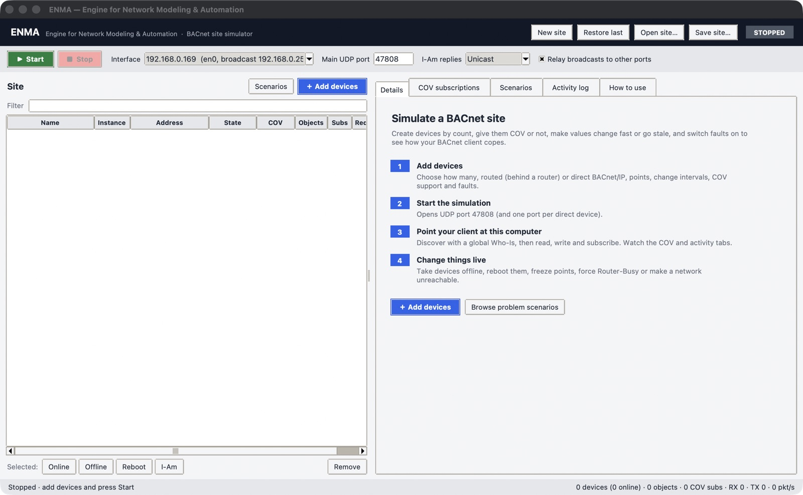
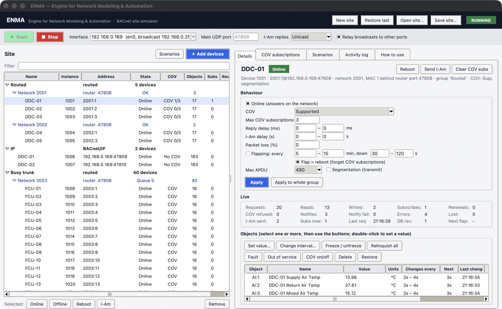
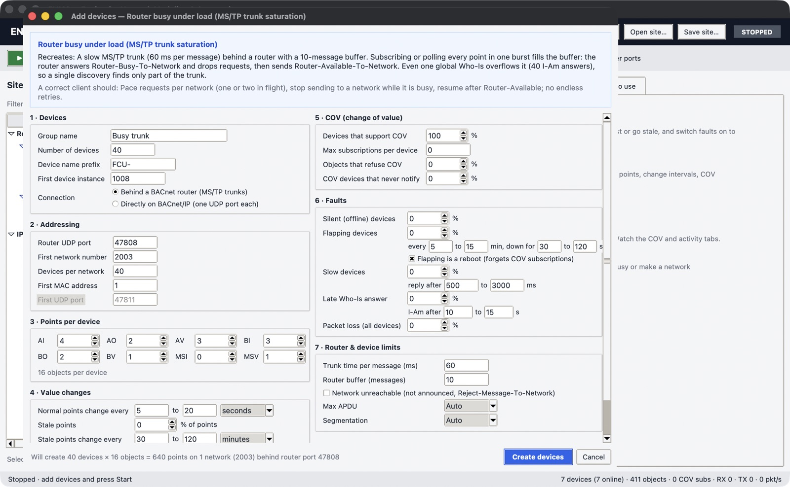
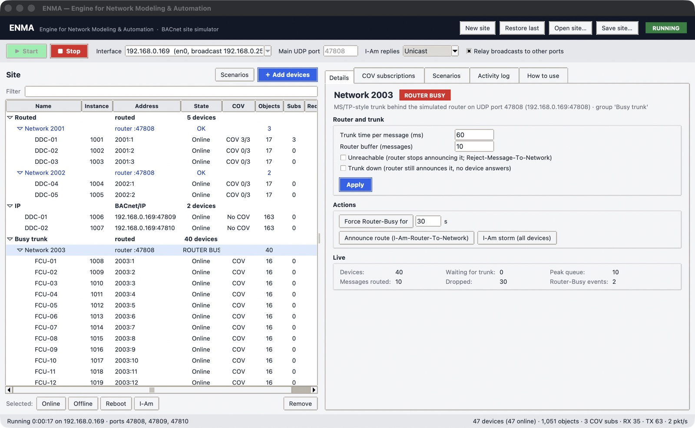
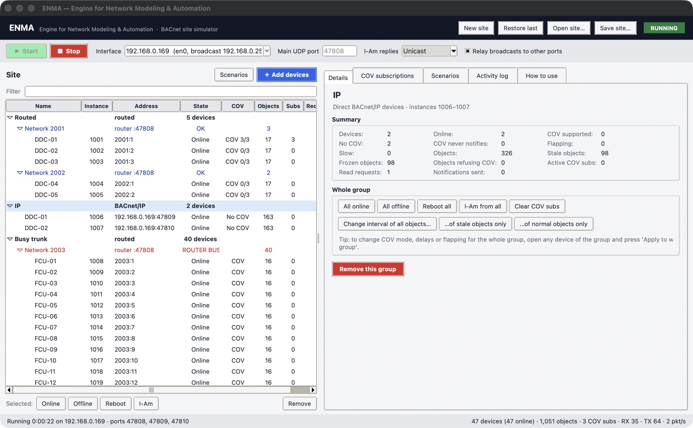
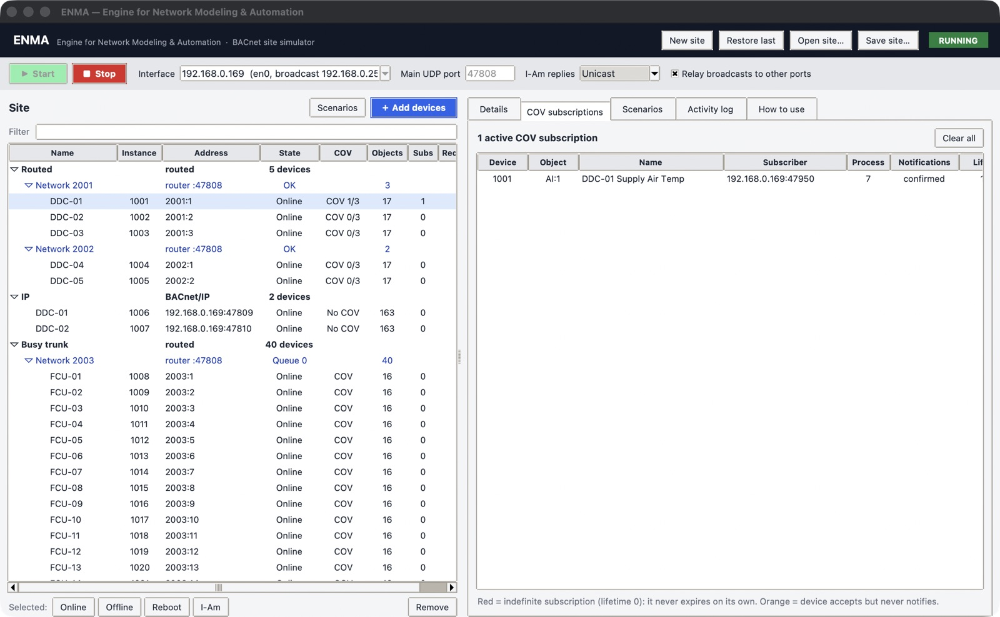
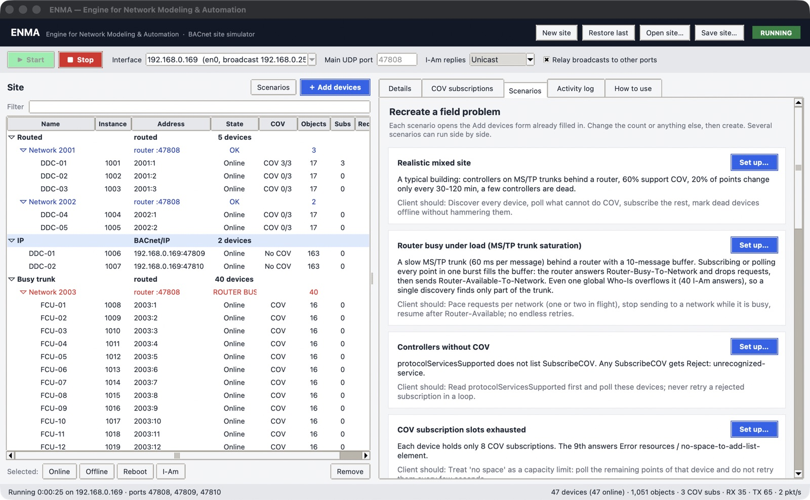
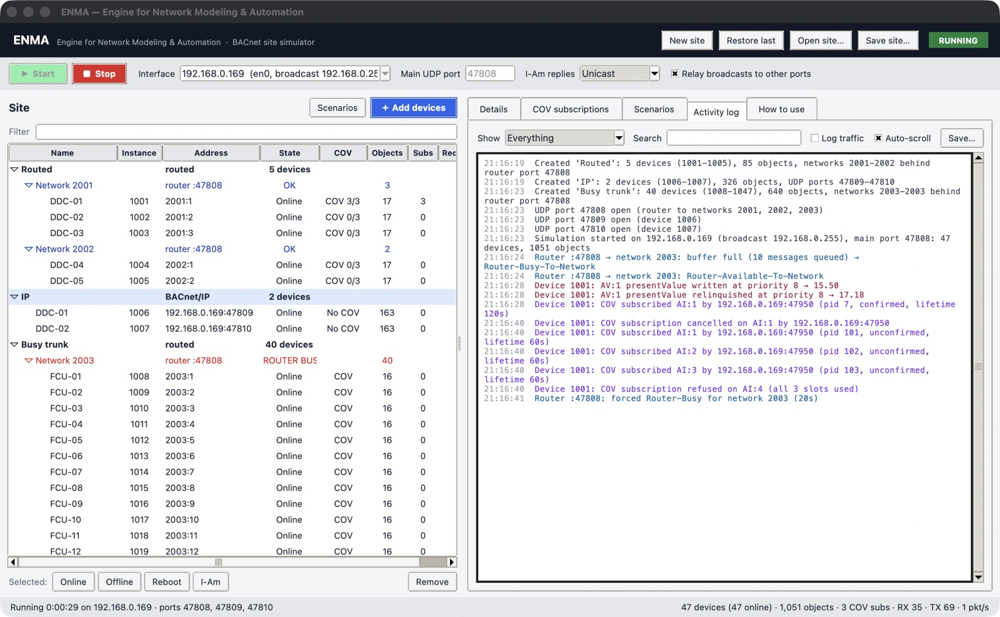

1. What ENMA is
ENMA simulates a complete BACnet/IP site on one computer: controllers, the routers in front of their MS/TP trunks, and the problems real sites have. Use it to test BACnet client software such as gateways, supervisors, BMS front ends or tools like YABE before it reaches a live site.
You create devices by count, choose how many support COV, decide how often their values change (so you can create stale points), and switch on faults such as silent controllers, flapping devices, slow answers, router buffer overflows (Router-Busy) or unreachable networks.
What you can simulate
Site
- Any number of devices, in groups
- Routed devices on MS/TP-style networks behind a router
- Direct BACnet/IP devices, one UDP port each
- AI, AO, AV, BI, BO, BV, MSI, MSV objects with realistic names and units
Values
- Random change interval between a low and a high limit
- A share of stale points (rare changes) or frozen points (never change)
- Manual values, faults, out-of-service, deleted objects
- Commandable objects with a 16-level priority array
COV
- Per device: supported, not supported, or "accepts but never notifies"
- Subscription slot limit per device
- Objects that refuse COV individually
- Confirmed and unconfirmed notifications, lifetimes, renewals
Faults
- Silent (offline), flapping and rebooting devices
- Slow replies, late Who-Is answers, packet loss
- Slow MS/TP trunk with a router buffer that overflows into Router-Busy
- Unreachable networks, trunk down, duplicate network numbers
- Small max APDU without segmentation
2. Requirements and starting
Requirements
- Python 3.8 or newer.
- tkinter (included with the python.org installers and with Homebrew Python on macOS; on Debian/Ubuntu install
python3-tk). - No other packages. ENMA uses only the Python standard library.
- macOS, Linux or Windows. On macOS the first start may ask whether Python may accept incoming network connections: choose Allow.
Starting
Open a terminal in the ENMA folder and run:
python3 main.pyOther ways to start:
| Command | What it does |
|---|---|
python3 main.py | Starts the application with its window. |
python3 -m enma | Same as main.py. |
python3 main.py --headless site.json [port] | Runs a saved site without a window (see Headless mode). |
python3 main.py --help | Prints the usage. |
main.py can be started from any folder, for example python3 ~/Desktop/ENMA/main.py.
3. Quick start (5 minutes)

- Add devices. Press ＋ Add devices. Keep the defaults (10 routed devices behind a router, 17 objects each, values changing every 10–60 seconds) and press Create devices.
- Choose the interface. In the toolbar, pick the network card that is on the same LAN as your BACnet client. The broadcast address is shown next to the IP.
- Start. Press ▶ Start. The pill at the top right turns green (RUNNING) and UDP port 47808 opens.
- Discover from the client. Send a global Who-Is from your client to port 47808 on this network. The 10
devices answer with I-Am, as
1001:1,1001:2, … behind the router at this computer's IP. - Read, write and subscribe. Read objects, write commandable values, subscribe to COV. Watch the COV subscriptions and Activity log tabs to see what the client does.
- Break things. Select a device and untick Online, reboot it, freeze points, or select the network and press Force Router-Busy. Then check that your client copes.
4. Key concepts
Routed and direct devices
Every group of devices is created either routed or direct:
| Routed (behind a BACnet router) | Direct (BACnet/IP) | |
|---|---|---|
| Like on site | MS/TP controllers on a trunk behind a BACnet/IP-to-MS/TP router | Controllers with their own Ethernet port |
| Address | network:MAC, e.g. 1001:5, reached through the router at IP:port | IP:port, e.g. 192.168.1.20:47809 |
| UDP port | All share the router's port (default the main port 47808) | One port per device: 47809, 47810, … |
| Defaults | Max APDU 480, no segmentation | Max APDU 1476, segmented transmit |
| Router faults | Trunk speed, router buffer / Router-Busy, unreachable, trunk down | Not applicable |
A routed group is split into networks automatically: with Devices per network = 30, 100 devices become networks 1001, 1002, 1003 and 1004. Each network is one MS/TP trunk with MAC addresses starting at First MAC address.
Ports, broadcasts and relay
- Main UDP port (default 47808) is the standard BACnet/IP port. The simulated router lives here, and this is where clients send their broadcasts.
- Only one program on a computer can use a UDP port. Several BACnet/IP devices on one IP must therefore use different ports, which is why each direct device has its own port.
- With Relay broadcasts to other ports switched on (default), a broadcast Who-Is or Who-Is-Router-To-Network that arrives on the main port is also passed to the devices and routers on the other ports. One global Who-Is then finds the whole site.
- Like a real router, the simulated router passes only global broadcasts (DNET 65535) and broadcasts directed at one of its networks to the devices behind it. A local broadcast Who-Is (no DNET) reaches only the direct devices.
- I-Am replies controls how devices answer Who-Is (and how routers answer Who-Is-Router-To-Network):
- Unicast (default): straight back to the address that asked. Works across subnets, through Docker and with a client on the same computer.
- Broadcast: to the whole subnet on the main port, the classic behaviour.
- Both: unicast and broadcast.
Objects and value changes
Each device gets objects of the types and counts you choose. Names follow common HVAC points (Supply Air Temp, Supply Fan Status, Operating Mode, …) with matching units and value ranges. Object instances start at 1 for each type.
- Changes: every object waits a random time between its low and high limit, changes, and waits again.
- Analog values move randomly within their range. Most steps are at least the COV increment, so COV subscribers see them; some are smaller (visible only by polling).
- Binary values toggle. Multi-state values move to another state.
- Stale objects use a separate, long interval (for example every 30–120 minutes). Frozen objects never change.
- Commandable objects (AO, AV, BO, BV, MSV) have a priority array. The simulated changes act on the relinquish default, so a value written by a client at a priority stays until it is relinquished.
Values only change while the simulation is running.
5. The main window

Header and toolbar
| Control | What it does |
|---|---|
| New site | Removes all devices (only while stopped). |
| Restore last | Loads the site that was open when ENMA was last closed. Enabled when such a site exists. |
| Open site… / Save site… | Load or save a site as a JSON file (see Saving). |
| Status pill | STOPPED or RUNNING. |
| ▶ Start / ■ Stop | Start opens all UDP ports and starts value changes. Stop closes the ports. Stopping also clears all COV subscriptions (as a power cycle would) and brings rebooting or flapping devices back. |
| Interface | The network the simulator broadcasts on: its IP and broadcast address. Locked while running. |
| Main UDP port | Default 47808. Locked while running. |
| I-Am replies | Unicast / Broadcast / Both (see Ports). Can be changed while running. |
| Relay broadcasts to other ports | Pass broadcasts from the main port to the other ports. Can be changed while running. |
Site tree
The tree lists groups, their networks (for routed groups) and their devices. Click a row to see its details on the right. Select several rows with Shift or ⌘/Ctrl.
| Column | Meaning |
|---|---|
| Name | Group name, Network n, or the device name. |
| Instance | BACnet device instance. |
| Address | network:MAC for routed devices, IP:port for direct devices. Network rows show their router port. |
| State | See the table below. |
| COV | COV (supported), COV 3/8 (supported, 3 of 8 slots used), No COV, Mute COV (accepts, never notifies). |
| Objects | Number of objects (not counting the device object). |
| Subs | Active COV subscriptions on the device. |
| Requests | Confirmed requests the device has received. |
Device states
| State | Meaning |
|---|---|
| Online | Answering normally. |
| OFFLINE | Switched off by you: answers nothing. |
| Rebooting | Restarting (5 s), subscriptions lost; sends I-Am when back. |
| Down (flap) | Temporarily gone because of flapping. |
| Net down | Its network's trunk is down. |
| Flapping | Online now, will drop off again. |
| Slow | Has a reply or I-Am delay. |
| DCC off | A client disabled it with DeviceCommunicationControl. |
Network states
OK (instant trunk), Queue n (messages waiting for the trunk), ROUTER BUSY,
Unreachable, Trunk down. Network rows turn red when they are not healthy.
Actions
- Filter: shows only devices whose name, instance, address, state or COV text contains the typed text, e.g.
OFFLINE,1003:orAHU-1. - Selected: Online / Offline / Reboot / I-Am: act on the selected devices. Selecting a group or network acts on all its devices.
- Remove: removes the selected groups or devices.
- Right-click (or Ctrl-click on macOS) for the same actions plus Clear COV subscriptions.
Status bar
Left: running time, IP and open ports, and registered foreign devices. Right: device count (online), object count, active COV subscriptions, packets received and sent, and the current packet rate.
6. Adding devices
Press ＋ Add devices (or Set up… on a scenario). The form has seven sections. Hover over any label for a short explanation. The line at the bottom summarises what will be created.

1 · Devices
| Field | Default | Meaning |
|---|---|---|
| Group name | Controllers | Label of the group in the tree. Also written to each device's location. |
| Number of devices | 10 | 1 to 50,000 per group. |
| Device name prefix | DDC- | Devices are named prefix + number: DDC-01, DDC-02, … |
| First device instance | next free (from 1001) | Instances count up from here and must not exist yet (0–4,194,302). |
| Connection | Behind a BACnet router | Routed (MS/TP trunks) or directly on BACnet/IP. |
2 · Addressing
| Field | Default | Meaning |
|---|---|---|
| Router UDP port | main port | Routed only. A port other than the main port acts as a second router. |
| First network number | next free (from 1001) | Routed only. Further networks take the next free numbers (1–65534). |
| Devices per network | 30 | Routed only. Devices on each trunk (1–254; MS/TP allows 127 masters). |
| First MAC address | 1 | Routed only. MAC of the first device on each network. |
| First UDP port | next free after the main port | Direct only. Ports already used by a device are skipped. |
3 · Points per device
Number of objects of each type per device (0–5,000 each, up to 20,000 per device). Defaults: AI 4, AO 2, AV 3, BI 3, BO 2, BV 2, MSI 0, MSV 1 (17 objects).
4 · Value changes
| Field | Default | Meaning |
|---|---|---|
| Normal points change every | 10 to 60 seconds | Each change waits a random time between the low and the high limit. Units: seconds, minutes or hours. |
| Stale points | 0 % | Share of all objects in the group that are stale. |
| Stale points change every | 30 to 120 minutes | Interval for stale objects. |
| Stale points never change (frozen) | off | Stale objects keep their value forever. |
| COV increment (analog) | 0.5 | covIncrement of analog objects. |
5 · COV (change of value)
| Field | Default | Meaning |
|---|---|---|
| Devices that support COV | 100 % | These list SubscribeCOV in protocolServicesSupported. The others reject SubscribeCOV (unrecognized-service). |
| Max subscriptions per device | 0 (unlimited) | Beyond this, SubscribeCOV gets Error resources / no-space-to-add-list-element. |
| Objects that refuse COV | 0 % | Objects on COV devices that answer Error object / optional-functionality-not-supported. |
| COV devices that never notify | 0 % | Accept the subscription (SimpleACK) but never send a notification. |
6 · Faults
| Field | Default | Meaning |
|---|---|---|
| Silent (offline) devices | 0 % | Never answer anything. |
| Flapping devices | 0 %, every 5–15 min, down for 30–120 s | Drop off the network for a while and come back. |
| Flapping is a reboot | on | On: the device loses its COV subscriptions and sends I-Am when back. Off: it only stops answering for a while. |
| Slow devices | 0 %, 500–3,000 ms | Every request is answered after a random delay in this range. |
| Late Who-Is answer | 0 %, 10–15 s | I-Am is sent only after this delay. |
| Packet loss (all devices) | 0 % | Share of requests silently lost. |
7 · Router & device limits
| Field | Default | Meaning |
|---|---|---|
| Trunk time per message (ms) | 0 (instant) | Routed only. Each request delivered, I-Am answer or notification occupies the trunk for this long. 30–80 ms is typical of a busy 38,400 baud trunk. |
| Router buffer (messages) | 0 (unlimited) | Routed only. When this many messages are waiting, new ones are dropped and Router-Busy-To-Network is sent. |
| Network unreachable | off | Routed only. The router stops announcing these networks and rejects traffic for them. |
| Max APDU | Auto | Auto = 480 for routed, 1476 for direct devices. Choices: 50, 128, 206, 480, 1024, 1476. |
| Segmentation | Auto | Auto = none for routed, segmented-transmit for direct devices. |
Press Create devices. If the simulation is running, the new ports open immediately. Any notes (for example about a duplicate network number) appear in a message.
7. Device view
Click a device in the tree.
Header
Name, state, and the address in full (for example 2001:1@192.168.0.169:47808: network 2001, MAC 1,
through the router at that IP and port), group, COV mode, max APDU and segmentation.
- Reboot: offline for 5 seconds, all COV subscriptions lost, I-Am broadcast when back.
- Send I-Am: broadcast an I-Am now.
- Clear COV subs: forget every subscription without telling the subscribers (as some devices do after a power dip).
Behaviour
| Setting | Meaning |
|---|---|
| Online | Off = silent device: no I-Am, no answers, no errors. |
| COV | Supported, Not supported (no SubscribeCOV), Accepts, never notifies. Changing it increases databaseRevision; switching to not supported clears the subscriptions. |
| Max COV subscriptions | 0 = unlimited. |
| Reply delay (ms) | Low–high range for every answer. 0–0 = immediate. |
| I-Am delay (s) | Extra delay before answering Who-Is. |
| Packet loss (%) | Share of requests ignored. |
| Flapping | Every a–b minutes, down for c–d seconds. |
| Flap = reboot | Whether flapping clears subscriptions and sends I-Am. |
| Max APDU / Segmentation | Largest answer the device sends, and whether it may segment longer answers. |
Apply changes this device. Apply to whole group applies the same behaviour to every device of the group, except the Online switch.
Live
Counters since the device was created: requests, reads, writes, subscribes, renewals, cancels, COV refused,
notifications sent, notification failures, errors sent, requests lost to packet loss, requests ignored while offline,
I-Am sent, active subscriptions, time of the last request, databaseRevision, time to the next flap and
time until it is back.
Objects
| Column | Meaning |
|---|---|
| Object | Type and instance, e.g. AI:1. |
| Value | Present value. Binary and multi-state show the state text and number. |
| Changes every | The interval, or never (frozen). |
| Next / Last change | Time to the next change and time of the last one. |
| COV | yes, no (refuses), or - when the device has no COV. |
| Subs / Reads | Subscriptions on this object and how often its present value was read. |
| Flags | stale, FAULT, OOS (out of service), cmd@8 (commanded at priority 8), DELETED. |
Select one or more objects, then:
| Button | Effect |
|---|---|
| Set value… (or double-click) | Sets the value of inputs, or the relinquish default of commandable objects. Accepts a number; 0/1 or the state text for binary; the state number or text for multi-state. If the object is commanded at a priority, the present value stays at the commanded value. |
| Change interval… | New low/high limits, or Never change to freeze. |
| Freeze / unfreeze | Toggles frozen. |
| Relinquish all | Clears the priority array. |
| Fault | Toggles the FAULT status flag and reliability (unreliable-other). COV subscribers are notified. |
| Out of service | Toggles outOfService. Inputs accept writes to their present value while out of service. |
| COV on/off | Whether this object accepts SubscribeCOV. Turning it off removes its subscriptions. |
| Delete | Removes the object from objectList. Reads then get unknown-object (a "dead point"). databaseRevision increases. |
| Restore | Brings a deleted object back. |
8. Network (router) view
Click a Network n row. It shows one MS/TP-style trunk behind the simulated router.

| Setting / action | Effect |
|---|---|
| Trunk time per message | See section 6, part 7. Setting it to 0 delivers anything still queued at once. |
| Router buffer | Queue limit before Router-Busy. |
| Unreachable | Router stops announcing the network; requests get Reject-Message-To-Network. Clearing it announces the network again. |
| Trunk down | Router still announces the network, but no device behind it answers (a cut MS/TP cable). |
| Force Router-Busy for n s | Router-Busy-To-Network now, traffic to the network dropped for n seconds, then Router-Available-To-Network. |
| Announce route | Broadcast I-Am-Router-To-Network now. |
| I-Am storm | Every device on the network broadcasts I-Am at once, through the trunk. |
Live counters: devices, messages waiting for the trunk, peak queue, messages routed, messages dropped and Router-Busy events.
9. Group view
Click a group row.

- Summary: devices, online, COV supported / none / never notifies, flapping, slow, objects, stale and frozen objects, objects refusing COV, active subscriptions, read requests, notifications sent.
- All online / All offline / Reboot all / I-Am from all / Clear COV subs for every device of the group. Reboot all recreates a site-wide power cut: all subscriptions lost, then I-Am from every device.
- Change interval of all objects, or of stale or normal objects only.
- Remove this group removes its devices and networks.
To give every device of a group the same COV mode, delays or flapping, open any device of the group, set the behaviour and press Apply to whole group.
10. COV subscriptions tab

| Column | Meaning |
|---|---|
| Device, Object, Name | The monitored object. |
| Subscriber | Address the subscription came from (and where notifications go). |
| Process | Subscriber process identifier. |
| Notifications | Confirmed or unconfirmed. |
| Lifetime / Expires in | Requested lifetime and time left. Red = INDEFINITE (lifetime 0 or none given): it never expires on its own. |
| Renewals, Sent, Last sent, Failures | Renewals received, notifications sent, last notification, confirmed notifications not acknowledged. |
Orange rows belong to devices that accept but never notify. Clear all makes every device forget its subscriptions. Up to 3,000 rows are shown; the heading gives the total.
11. Scenarios
The Scenarios tab recreates field problems. Set up… opens the Add devices form already filled in; change anything (for example the count) and create. Several scenarios can run side by side.

Realistic mixed site
- Creates
- 60 routed controllers on 2 trunks, 60% COV, 20% of objects stale (30–120 min), 5% silent, others change every 10–120 s.
- Client should
- Discover every device, poll what cannot do COV, subscribe the rest, mark dead devices offline without hammering them.
Router busy under load (MS/TP trunk saturation)
- Creates
- 40 devices on one trunk, 60 ms per message, router buffer 10, all COV.
- Shows
- Bursts of subscribes or reads fill the buffer: Router-Busy-To-Network and dropped requests, then Router-Available-To-Network. Even one global Who-Is overflows it (40 I-Am answers), so one discovery finds only part of the trunk.
- Client should
- Pace requests per network (one or two in flight), stop sending while busy, resume after Router-Available, no endless retries.
Controllers without COV
- Creates
- 20 devices without SubscribeCOV in protocolServicesSupported.
- Client should
- Read protocolServicesSupported first and poll; never retry a rejected subscription in a loop.
COV subscription slots exhausted
- Creates
- 10 devices with 20 objects each but only 8 subscription slots.
- Client should
- Treat no-space-to-add-list-element as a capacity limit and poll the remaining objects.
Some objects refuse COV
- Creates
- 10 COV devices where half the objects answer optional-functionality-not-supported.
- Client should
- Decide COV per object, not per device.
COV accepted but never notified
- Creates
- 10 devices that acknowledge SubscribeCOV and never notify, not even the initial notification.
- Client should
- Trust data, not the acknowledgement: keep a backup poll and flag the point.
Silent (dead) controllers
- Creates
- 30 devices, 30% never answer.
- Client should
- Mark them offline after a few misses and probe slowly instead of reading every point every cycle.
Flapping devices that forget subscriptions
- Creates
- 20 devices, half drop off for 30–90 s every 3–6 min, restart, send I-Am and lose their subscriptions.
- Client should
- Notice the restart and re-subscribe; values must not go stale silently.
Unreachable network (unknown route)
- Creates
- 10 devices on network 3205, not announced by the router.
- Shows
- Who-Is-Router-To-Network gets no answer (clients report unknown route); traffic sent through the router gets Reject-Message-To-Network.
- Client should
- Hold the whole network after the first failure with a back-off.
Slow devices and late Who-Is answers
- Creates
- 20 devices: half answer after 2–6 s, half answer Who-Is after 10–15 s.
- Client should
- Use timeouts sized for slow MS/TP devices; a late I-Am must not mark a device as removed.
Stale points
- Creates
- 10 devices, half of all objects frozen, the rest change every 30–120 s.
- Client should
- Flag frozen points as stale and leave healthy ones alone; an online device with steady values is not a dead one.
Packet loss
- Creates
- 10 devices losing 10% of requests.
- Client should
- Recover with retries, without duplicate writes or false "offline" verdicts.
Large site (scale)
- Creates
- 300 routed controllers, 30 objects each (9,000 points) on 6 trunks, 70% COV, 15% stale.
- Client should
- Keep discovery, polling and COV renewals spread out, with no bursts per network.
Small APDU, no segmentation
- Creates
- 3 devices with 200 objects each, max APDU 480, no segmentation.
- Shows
- Reading the whole objectList or a large ReadPropertyMultiple gets Abort segmentation-not-supported.
- Client should
- Fall back to
objectList[0]and index-by-index reads, and size RPM requests to fit.
Duplicate network number (two routers)
- Creates
- A second router on another UDP port announcing network 1001, which an existing routed group already uses. Create a routed group with network 1001 first.
- Client should
- Detect two routers for one network and report it; not flip-flop between them.
12. Activity log

| Colour / kind | Examples |
|---|---|
| Info | Groups created, ports opened, site saved, simulation started or stopped. |
| COV | Subscribed (with lifetime; INDEFINITE is called out), cancelled, refused (slots full), expired, cleared, notification not acknowledged. |
| Router | Buffer full → Router-Busy-To-Network, Router-Available-To-Network, forced busy, routes announced, network settings. |
| Devices | Offline / online, rebooting, flapping, DeviceCommunicationControl, objects deleted or restored. |
| Writes | Present value written or relinquished, with priority and new value. |
| Warnings | Duplicate network numbers, send failures, segmented replies timing out. |
| Traffic | With Log traffic on: one line per request and its answer (SimpleACK, ComplexACK, Error, Reject, Abort), Router-Busy and I-Am-Router replies. |
Show filters by kind, Search (press Enter) filters by text, Auto-scroll follows new lines, Clear empties the view, Save… writes the log to a text file. The log keeps the last 20,000 entries.
13. Saving and opening sites
- Save site… writes the whole site to a JSON file: groups, networks and their router settings, every device with its behaviour, and every object with its interval, stale/frozen flag, COV refusal, fault, out-of-service, deleted state and current value. The main port, I-Am reply mode and relay setting are saved too.
- Open site… replaces the current site (stop the simulation first).
- When you close ENMA, the current site is saved to
~/.enma/last_site.json. Restore last loads it. - Live state is not saved: COV subscriptions, counters, queues and a device that is rebooting or flapping down at that moment (it is saved as online).
14. Headless mode
Runs a saved site without a window, for servers, CI pipelines or long soak tests:
python3 main.py --headless my-site.json # use the main port saved in the site
python3 main.py --headless my-site.json 47900 # override the main portThe activity log is printed to the terminal. Press Ctrl+C to stop.
15. Protocol behaviour reference
This section describes exactly what ENMA sends, so you can tell expected behaviour from a client bug.
Services
| Service | Behaviour |
|---|---|
| Who-Is | Answered with I-Am (device instance, max APDU, segmentation, vendor ID) when the instance is in range, or no range is given. Routed devices answer only global or directed broadcasts. |
| Who-Has | By object identifier or name; answered with I-Have. |
| ReadProperty | Supports array indexes (index 0 = length). all, required and optional are rejected with Error services / inconsistent-parameters. Device instance 4194303 means "this device". |
| ReadPropertyMultiple | Supports all, required, optional and indexes. Errors are returned per property inside the ACK; an unknown object gives unknown-object for each property requested. |
| WriteProperty / WritePropertyMultiple | See Writes. For WPM, earlier writes stay applied when a later one fails; the error names the first failed write. |
| SubscribeCOV | See COV. |
| DeviceCommunicationControl | disable: the device answers only DCC and ReinitializeDevice. disable-initiation: no notifications and no unsolicited I-Am. Optional duration in minutes; any password is accepted. |
| ReinitializeDevice | Coldstart and warmstart: SimpleACK, then reboot (5 s offline, subscriptions lost, I-Am). Other states: Error services / optional-functionality-not-supported. |
| TimeSynchronization, UTCTimeSynchronization | Accepted and ignored. |
| Anything else (ReadRange, AtomicReadFile, SubscribeCOVProperty, …) | Reject unrecognized-service. |
protocolServicesSupported lists ReadProperty, ReadPropertyMultiple, WriteProperty,
WritePropertyMultiple, DeviceCommunicationControl, ReinitializeDevice, I-Am, I-Have, TimeSynchronization, Who-Has, Who-Is
and UTCTimeSynchronization, plus SubscribeCOV on COV devices. Malformed requests get Reject invalid-tag,
missing-required-parameter, too-many-arguments or parameter-out-of-range.
Objects and properties
| Object | Properties (besides objectIdentifier, objectName, objectType, propertyList) |
|---|---|
| Device | systemStatus, vendorName, vendorIdentifier (999), modelName, firmwareRevision, applicationSoftwareVersion, location, description, protocolVersion (1), protocolRevision (14), protocolServicesSupported, protocolObjectTypesSupported, objectList, maxApduLengthAccepted, segmentationSupported, maxSegmentsAccepted (when segmenting), apduTimeout (3000), numberOfApduRetries (3), deviceAddressBinding (empty), databaseRevision, localDate, localTime, utcOffset |
| AI | presentValue, description, statusFlags, eventState, reliability, outOfService, units, covIncrement |
| AO, AV | as AI + priorityArray, relinquishDefault |
| BI | presentValue, description, statusFlags, eventState, reliability, outOfService, polarity, inactiveText, activeText |
| BO | as BI + priorityArray, relinquishDefault |
| BV | as BI without polarity + priorityArray, relinquishDefault |
| MSI | presentValue, description, statusFlags, eventState, reliability, outOfService, numberOfStates, stateText |
| MSV | as MSI + priorityArray, relinquishDefault |
Errors: unknown object → object / unknown-object; property not in the object → property /
unknown-property; index on a non-array → property-is-not-an-array; index out of range →
invalid-array-index. databaseRevision increases when an object is deleted or restored and when the
COV mode changes.
Writes and priorities
- Priority 1–16, default 16. Outside that range: Reject parameter-out-of-range.
- Data types are checked strictly: analog needs REAL, binary ENUMERATED 0/1, multi-state UNSIGNED 1…numberOfStates. Wrong type → invalid-data-type; out of range → value-out-of-range.
- Commandable objects: the value goes into the priority array; NULL relinquishes that priority. The present value is the highest-priority non-NULL entry, else the relinquish default.
- Inputs (AI, BI, MSI): present value is writable only while
outOfServiceis true, otherwise write-access-denied. - Also writable: relinquishDefault, outOfService, covIncrement and description on objects; location and description on the device. Anything else: write-access-denied.
COV
- A subscription is identified by subscriber address + process identifier + object. Subscribing again renews it.
- Lifetime 0, or no lifetime, means indefinite. SubscribeCOV with neither issueConfirmed nor lifetime cancels; cancelling something that does not exist still gets a SimpleACK.
- After every successful subscribe or renewal, an initial notification follows the SimpleACK.
- Notifications carry presentValue and statusFlags. Analog: sent when the value moves by at least covIncrement since the last notification. Binary and multi-state: on every change. Any statusFlags change (fault, out of service) is always sent.
- Confirmed notifications wait 3 s for an acknowledgement and are tried 4 times in total. Notifications from routed devices pass through the trunk queue and can be dropped when the router buffer is full.
- Subscriptions that are not renewed are removed when their lifetime ends. Reboots, flap-reboots, Stop and "Clear COV subs" remove them without telling the subscriber.
- Refusals: no SubscribeCOV → Reject unrecognized-service; object refuses or is the device object → object / optional-functionality-not-supported; slots full → resources / no-space-to-add-list-element.
APDU size and segmentation
- An answer may be as long as the smaller of the device's max APDU and the client's max APDU (from the request).
- Longer answers are segmented if the device supports segmentation and the client accepts segments; window size from the client's SegmentACK, 3 s timeout, 3 retries. If the client accepts fewer segments than needed: Abort apdu-too-long.
- Otherwise: Abort segmentation-not-supported. Segmented requests are not accepted (Abort segmentation-not-supported).
Router and network layer
| Message | Behaviour |
|---|---|
| Who-Is-Router-To-Network | Answered with I-Am-Router-To-Network for the requested network if this router reaches it, or with all reachable networks when none is given. Unreachable networks are never announced. |
| I-Am-Router-To-Network | Sent by each router when the simulation starts and when a network becomes reachable again. If another router announces a network ENMA owns, a duplicate warning is logged. |
| Initialize-Routing-Table (query) | Answered with Initialize-Routing-Table-Ack listing the reachable networks. |
| Traffic for an unknown or unreachable network | Reject-Message-To-Network, reason 1 (not directly connected), to the sender. |
| Router-Busy-To-Network | When the buffer is full or busy is forced: broadcast (at most once a second) and sent to the requester. The message is dropped. |
| Router-Available-To-Network | When the queue has drained to half the buffer, or the forced period ends: broadcast and sent to those that got Router-Busy. |
| Unknown network message types | Reject-Message-To-Network, reason 3. |
Trunk model: each request delivered to a device, each answer to a broadcast (I-Am) and each notification from a routed device takes trunk time on its network, one after another. A Who-Is broadcast is one frame on the trunk; only matching devices' answers are queued. A device that does not exist on the network stays silent, as on MS/TP.
BVLL and foreign devices
- Original-Unicast-NPDU and Original-Broadcast-NPDU are handled normally; Forwarded-NPDU is answered to the original source address.
- Register-Foreign-Device is accepted (TTL + 30 s grace). A registered foreign device's Distribute-Broadcast-To-Network is treated as a broadcast, and ENMA's broadcasts are forwarded to every registered foreign device. Use this for clients on another subnet or inside Docker.
- Read/Write-Broadcast-Distribution-Table, Read-FDT and Delete-FDT are answered with a BVLC-Result NAK.
- ENMA ignores its own broadcasts when they come back to it.
Fault behaviour
| Fault | On the wire |
|---|---|
| Offline | No answer to anything, including Who-Is. |
| Reboot | 5 s offline, subscriptions and DCC state cleared, then a broadcast I-Am. |
| Flapping | Offline for the down time. With "flap = reboot": subscriptions cleared and I-Am when back. |
| Reply delay | Every request (including Who-Is) answered after the delay. |
| I-Am delay | Only Who-Is answers are delayed. |
| Packet loss | The request is ignored. |
| Trunk down | Route announced, devices behind it silent. |
| Unreachable | Route not announced, Reject-Message-To-Network for traffic to it. |
16. Test recipes for a BACnet client
Each recipe gives the setup and what to check on the client (for example a gateway's logs or UI) and in ENMA.
Discovery across routers and ports
Setup: one routed group (2 networks) and one direct group. Do: discover from the client.
Check: every device is found with the right address; routed devices appear as network:MAC through the
router. If routed devices are missing, the client's Who-Is is not a global broadcast.
COV capability detection
Setup: scenarios Controllers without COV, Some objects refuse COV and COV subscription slots exhausted. Check: in the COV tab only allowed objects are subscribed; in the log, refusals happen once per object, not in a loop; refused objects are still updated by polling.
Router-Busy and pacing
Setup: Router busy under load. Do: start the client with COV on all points. Check: the network view's Dropped and Router-Busy events counters stay low; the log shows few "buffer full" lines; the client does not send to the network while busy. Raise or lower the buffer to find the client's limit.
Dead and flapping devices
Setup: Silent controllers and Flapping devices. Check: the Ignored (offline) counter on a silent device grows slowly (the client probes, not polls every point); after a flap the device's subscriptions reappear in the COV tab within the client's renewal time.
Stale point detection
Setup: Stale points, or freeze chosen objects. Check: the client flags exactly the frozen objects as stale. Then unfreeze some and check the flag clears.
Unknown route
Setup: Unreachable network. Check: the log shows few rejects, not one every few seconds per point. Clear Unreachable in the network view and check that the client recovers.
Writes and priorities
Do: write a commandable object at priority 8 from the client, then relinquish. Check: the object's flags
show cmd@8, then return to the relinquish default; the log shows each write with its priority. Writing an
AI that is not out of service must be refused.
Lifetimes and renewals
Check in the COV tab: lifetimes are not INDEFINITE (unless intended), Expires in never reaches 0 before a renewal, and renewals are spread out rather than all at the same second.
Large objectLists
Setup: Small APDU, no segmentation. Check: the client still discovers all 200 objects (using index reads), and its RPM requests fit in 480 bytes (no aborts in the traffic log).
Scale and soak
Setup: Large site (or thousands of devices). Save the site and run it headless for hours. Check: the client's memory and CPU stay flat, COV subscriptions stay live, and the packet rate in the status bar is steady rather than bursty.
17. Troubleshooting
| Problem | Cause and fix |
|---|---|
| "UDP port 47808: Address already in use" | Another BACnet program on this computer (YABE, a gateway, another ENMA) owns the port. Close it, or give ENMA another main port. Only one program per computer can own a port. |
| The client finds nothing | Check that the right interface is chosen and that the client is on the same subnet. Allow Python through the firewall (macOS asks on first start). Try I-Am replies = Unicast. A client on another subnet or in Docker should register as a foreign device with ENMA or send unicast. |
| Client on the same computer finds nothing | Run the client on another port (e.g. 47900); 47808 belongs to ENMA and 47809+ to direct devices. Keep I-Am replies = Unicast so answers go back to the client's port. |
| Direct devices found, routed devices not | The client sends a local broadcast Who-Is. Routers forward only global broadcasts. Use a global Who-Is (DNET 65535). |
| Direct devices on 47809+ not found | Switch on Relay broadcasts to other ports, or point the client at each port. |
| Only part of a network is discovered | Expected with a small router buffer: the I-Am answers overflow it. Raise the buffer or trunk speed, or discover per network. |
| Reads time out on some devices | Check their state (offline, flapping, DCC off), their reply delay and packet loss, and the network (busy, trunk down). |
| "Cannot open site" | Stop the simulation first; the file must be a site saved by ENMA. |
| "tkinter is not available" | Install tkinter (python3-tk on Debian/Ubuntu) or use headless mode. |
18. Limits and performance
- Per group: up to 50,000 devices, up to 20,000 objects per device, up to 2 million objects in total.
- Tested with 5,000 devices and 100,000 objects: created in under a second; one global Who-Is answered by all 5,000 devices in about 0.1 s; the window stays responsive.
- Routed networks hold up to 255 devices (MAC 0–254). Network numbers 1–65534. Device instances 0–4,194,302.
- IPv4 BACnet/IP only (no BACnet/IPv6, MS/TP serial or BACnet/SC).
- Objects: AI, AO, AV, BI, BO, BV, MSI, MSV and Device. No schedules, trends, alarms or intrinsic reporting.
19. For developers
Project layout
main.py boots the application
enma/
config.py product name, version, file locations
app.py command line entry point (GUI or --headless)
headless.py run a saved site without the GUI
bacnet/ protocol layer, no simulation logic
constants.py enumerations and property tables
codec.py tag encoding / decoding, BACnet error types
framing.py APDU builders, NPDU and BVLL framing, addresses
core/ simulation engine, no GUI code
model.py objects (points) and COV subscriptions
device/ one simulated device
base.py identity, settings, life cycle, sending
dispatch.py receiving and answering APDUs, segmentation, delays, loss
properties.py object model: reading and writing properties
services.py confirmed services
cov.py subscription table and notifications
network.py router networks (trunk queue, Router-Busy) and UDP endpoints
simulator/ the engine
base.py engine thread, settings, start / stop
routing.py BVLL / NPDU packet path, network layer messages
scheduler.py value changes, lifetimes, flapping
builder.py creating and removing groups, networks, devices, objects
operations.py live changes requested by the user interface
snapshots.py read-only state for the user interface
persistence.py save / open a site as JSON
group.py, templates.py, scenarios.py, util.py
gui/ tkinter user interface
app.py main window
add_dialog.py, interval_dialog.py
views/ welcome, device, network and group views
theme.py, help_text.pyThreading model
- The engine (
Simulator) runs an asyncio event loop in its own thread. All engine state is read and changed only in that thread. - Other threads call in with
sim.query(fn, *args)(run a function in the engine thread and return its result) orsim.run_coro(coro). - The GUI turns off Python's automatic garbage collection and collects from its own timer, so tkinter objects are always finalised on the Tk thread. Keep this if you change the GUI; otherwise the engine thread can deadlock with the GUI.
Using the engine without the GUI
from enma.core.simulator import Simulator
sim = Simulator()
sim.start_loop()
sim.configure(main_port=47808)
sim.query(sim.add_group, dict(name="Test", count=20, kind="routed", cov_pct=50, stale_pct=20))
print(sim.run_coro(sim.start())) # list of ports that failed to open
print(sim.query(sim.snapshot_status))
sim.query(sim.device_op, [1001], "offline")The keys accepted by add_group are those of DEFAULT_PARAMS in
enma/core/templates.py.
Extending
- New scenario: add an entry to
SCENARIOSinenma/core/scenarios.py(title, problem, expect, params). It appears in the Scenarios tab automatically. - New point names: edit the templates in
enma/core/templates.py. - New confirmed service: add a
svc_*handler inenma/core/device/services.py, register it in_confirmed(dispatch.py) and add its bit toDEVICE_SERVICE_BITS. - New object type: add its property list to
OBJECT_PROPS(bacnet/constants.py), reading and writing incore/device/properties.py, and generation incore/simulator/builder.py.
20. Glossary
| Term | Meaning |
|---|---|
| APDU | Application-layer message: a request, an answer or an error. |
| BVLL | BACnet/IP's UDP wrapper (Annex J): unicast, broadcast, forwarded and foreign-device messages. |
| COV | Change of value: the device sends updates to subscribers instead of being polled. |
| covIncrement | Minimum change of an analog value that triggers a COV notification. |
| DNET / DADR, SNET / SADR | Destination / source network and MAC address in the network layer header, used to reach devices behind routers. |
| Foreign device | A BACnet/IP node on another subnet that registers with a BBMD to receive broadcasts. |
| Global broadcast | A broadcast with DNET 65535, forwarded by routers to every network. |
| Max APDU | Largest message a device sends or accepts in one piece (480 bytes on MS/TP, 1476 on BACnet/IP). |
| MS/TP | BACnet's RS-485 serial network. Slow; reached through a router. |
| Priority array | 16 levels of commands on an output or value object; the highest non-NULL wins. |
| Router-Busy-To-Network | Router's message that it cannot take more traffic for a network for now. |
| Reject-Message-To-Network | Router's message that it cannot deliver to a network (for example, unknown). |
| Segmentation | Splitting a long answer into several messages. |
| Stale point | A point whose value has not changed (or not been updated) for a long time. |